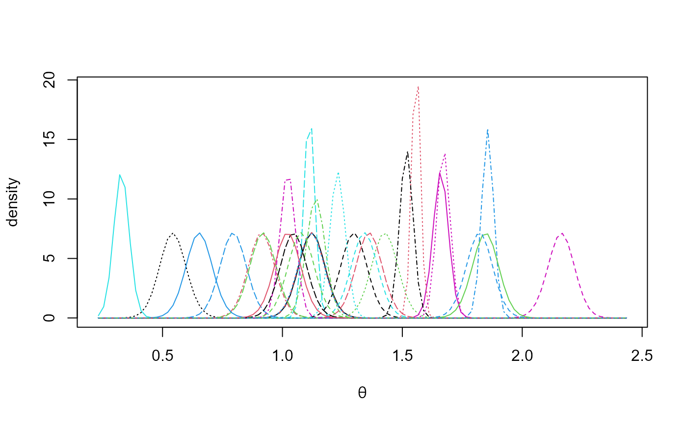

Hierarchical 1-way Analysis of Variance
Paul J. Northrop
2020-02-24
Source:vignettes/bang-c-anova-vignette.Rmd
bang-c-anova-vignette.Rmdwhere \(\alpha_i \sim N(0, \sigma_\alpha^2)\), so that \(\theta_i = \mu + \alpha_i \sim N(\mu, \sigma_\alpha^2)\), and \(\epsilon_{ij} \sim N(0, \sigma^2)\) and all random variables are independent. Variability of the response variable \(Y\) about an overall level \(\mu\) is decomposed into contributions \(\alpha_i, i = 1, \ldots, I\) from an explanatory factor indicating membership of group \(i\) and a random error term \(\epsilon_{ij}\).
This model has \(I + 3\) parameters: \(\boldsymbol{\mathbf{\phi}} = (\mu, \sigma_\alpha, \sigma)\) and \(\boldsymbol{\mathbf{\alpha}} = (\alpha_1, \ldots, \alpha_I)\). Equivalently, we could replace \(\boldsymbol{\mathbf{\alpha}}\) by \(\boldsymbol{\mathbf{\theta}} = (\theta_1, \ldots, \theta_I)\). The full posterior \(\pi(\boldsymbol{\mathbf{\alpha}},\boldsymbol{\mathbf{\phi}} \mid \boldsymbol{\mathbf{y}}) = \pi(\boldsymbol{\mathbf{\alpha}} \mid \boldsymbol{\mathbf{\phi}}, \boldsymbol{\mathbf{y}}) \, \pi(\boldsymbol{\mathbf{\phi}} \mid \boldsymbol{\mathbf{y}})\) can be factorized into products of lower-dimensional densities. See the Appendix for details. If it is assumed that \(\mu\) and \((\sigma_\alpha, \sigma)\) are independent a priori and a normal prior is set for \(\mu\) then the only challenging part of sampling from \(\pi(\boldsymbol{\mathbf{\alpha}},\boldsymbol{\mathbf{\phi}} \mid \boldsymbol{\mathbf{y}})\) is to simulate from the two-dimensional density \(\pi(\sigma_\alpha, \sigma \mid \boldsymbol{\mathbf{y}})\). Otherwise, we need to simulate from \(\pi(\mu, \sigma_\alpha, \sigma \mid \boldsymbol{\mathbf{y}})\). The bang function hanova1 uses the rust package (Northrop 2017) to simulate from these densities. In sampling from the marginal posterior density \(\pi(\phi \mid \boldsymbol{\mathbf{y}})\) we use a parameterization designed to improve the efficiency of sampling. In this case we work with \((\log\sigma_\alpha, \log\sigma)\). We illustrate the use of hanova1 using two example datasets. Unless stated otherwise we use the default hyperprior \(\pi(\mu, \sigma_\alpha, \sigma) \propto 1/\sigma\), that is, a uniform prior for \((\mu, \sigma_\alpha, \log\sigma)\) for \(\sigma_\alpha>0, \sigma>0\) (see Sections 5.7 and 11.6 of Gelman et al. (2014)). A user-defined prior can be set using set_user_prior.
Late 21st Century Global Temperature Projection Data
The data frame temp2 contains indices of global temperature change from late 20th century (1970-1999) to late 21st century (2069-2098) based on data produced by the Fifth Coupled Model Intercomparison Project (CMIP5). The dataset is the union of four subsets, each based on a different greenhouse gas emissions scenario called a Representative Concentration Pathway (RCP). Here we analyse only data for RCP2.6. Of course, inferences about the overall temperature change parameter \(\mu\) are important, but it is also interesting to compare the magnitudes of \(\sigma_\alpha\) and \(\sigma\). If, for example, if \(\sigma_\alpha\) is much greater than \(\sigma\) then uncertainty about temperature projection associated with choice of GCM is greater than that associated with the choice of simulation run from a particular GCM. See Northrop and Chandler (2014) for more information.
library(bang)
# Extract RCP2.6 data
RCP26_2 <- temp2[temp2$RCP == "rcp26", ]There are 61 observations in total distributed rather unevenly across the 38 GCMs. Only 28 of the GCMs have at least one run available for RCP2.6.
# Number of observations
length(RCP26_2[, "index"])
#> [1] 61
# Numbers of runs for each GCM
table(RCP26_2[, "GCM"])
#>
#> ACCESS1-0 ACCESS1-3 bcc-csm1-1 bcc-csm1-1-m BNU-ESM
#> 0 0 1 1 1
#> CanESM2 CCSM4 CESM1-BGC CESM1-CAM5 CMCC-CM
#> 5 6 0 3 0
#> CMCC-CMS CNRM-CM5 CSIRO-Mk3-6-0 EC-EARTH FGOALS-g2
#> 0 1 10 2 1
#> FIO-ESM GFDL-CM3 GFDL-ESM2G GFDL-ESM2M GISS-E2-H
#> 3 1 1 1 1
#> GISS-E2-H-CC GISS-E2-R GISS-E2-R-CC HadGEM2-AO HadGEM2-CC
#> 0 1 0 1 0
#> HadGEM2-ES inmcm4 IPSL-CM5A-LR IPSL-CM5A-MR IPSL-CM5B-LR
#> 4 0 4 1 0
#> MIROC-ESM MIROC-ESM-CHEM MIROC5 MPI-ESM-LR MPI-ESM-MR
#> 1 1 3 3 1
#> MRI-CGCM3 NorESM1-M NorESM1-ME
#> 1 1 1
# Number of GCMs with at least one run
sum(table(RCP26_2[, "GCM"]) > 0)
#> [1] 28We use hanova1 to sample from the posterior distribution of the parameters based on the (default) improper uniform prior for \((\mu, \log\sigma_\alpha, \sigma)\), described in Section 11.6 of Gelman et al. (2014). This prior fits in to the special case considered in the Appendix, with an infinite prior variance \(\sigma_0^2\) for \(\mu\).
# The response is the index, the explanatory factor is the GCM
temp_res <- hanova1(resp = RCP26_2[, "index"], fac = RCP26_2[, "GCM"])
# Plots relating to the posterior sample of the variance parameters
plot(temp_res, params = "ru")
plot(temp_res, ru_scale = TRUE)

The plot on the left shows the values sampled from the posterior distribution of \((\sigma_\alpha, \sigma)\) with superimposed density contours. We see that the posterior distribution is located at values for which \(\sigma_\alpha\) is much greater than \(\sigma\), by a factor of nearly 10. On the right is a similar plot displayed on the scale used for sampling, \((\rho_1, \rho_2)=(\log \sigma_\alpha, \log \sigma)\), after relocation of the posterior mode to the origin and rotation and scaling to near circularity of the density contours.
We summarize the marginal posterior distribution of \(\mu\) using a histogram with a superimposed kernel density estimate.
hist(temp_res$sim_vals[, "mu"], main = "", xlab = expression(mu), prob = TRUE)
lines(density(temp_res$sim_vals[, "mu"]))
The following plot summarizes the estimated marginal posterior densities of the mean index for each GCM.
plot(temp_res, params = "pop", which_pop = "all", one_plot = TRUE)
Coagulation time data
In the temperature projection example sampling was conducted on the scale \((\log\sigma_\alpha, \log\alpha)\) and was unproblematic. It would also have been unproblematic had we sampled on the original \((\sigma_\alpha, \sigma)\) scale. To show that there are examples where the latter is not the case we consider a small dataset presented in Section 11.6 of Gelman et al. (2014). The response variable is the coagulation time of blood drawn from 24 animals allocated to different diets. The crucial aspect of this dataset is that the explanatory factor (diet) has only 4 levels. This means that there is little information about \(\sigma_\alpha\) in the data. Unless some prior information about \(\sigma_\alpha\) is provided the posterior distribution for \(\sigma_\alpha\) will tend to have a heavy upper tail (Gelman 2006).
The generalized ratio-of-uniforms method used by rust can fail for heavy-tailed densities and this is indeed the case for these data if we try to sample directly from \(\pi(\sigma_\alpha, \sigma \mid \boldsymbol{\mathbf{y}})\) using the rust package’s default settings for the generalized ratio-of-uniforms algorithm. One solution is to reparameterize to \((\log\sigma_\alpha, \log\sigma)\), which hanova1 implements by default. Another possibility is to increase the generalized ratio-of-uniforms tuning parameter r from the default value of 1/2 used in rust. These approaches are illustrated below.
coag1 <- hanova1(resp = coagulation[, 1], fac = coagulation[, 2], n = 10000)
coag2 <- hanova1(resp = coagulation[, 1], fac = coagulation[, 2], n = 10000,
param = "original", r = 1)
plot(coag1, params = "ru")
plot(coag1, ru_scale = TRUE)The heaviness of the upper tail of the marginal posterior density of \(\sigma_\alpha\) is evident in the plot on the left. Parameter transformation to \((\rho_1, \rho_2)=(\log\sigma_\alpha, \log\sigma)\) results in a density (in the plot on the right) from which it is easier to simulate.
We produce some summaries of the posterior sample stored in coag1. The summaries calculated from coag2 are very similar.
probs <- c(2.5, 25, 50, 75, 97.5) / 100
all1 <- cbind(coag1$theta_sim_vals, coag1$sim_vals)
round(t(apply(all1, 2, quantile, probs = probs)), 1)
#> 2.5% 25% 50% 75% 97.5%
#> theta[1] 58.8 60.4 61.2 62.0 63.8
#> theta[2] 64.0 65.2 65.9 66.5 67.9
#> theta[3] 65.7 67.1 67.8 68.4 69.8
#> theta[4] 59.4 60.5 61.1 61.7 62.9
#> mu 54.7 62.2 64.0 65.7 73.2
#> sigma[alpha] 2.0 3.5 5.0 7.9 27.0
#> sigma 1.8 2.2 2.4 2.7 3.4These posterior summaries are similar to those presented in Table 11.3 of Gelman et al. (2014) (where \(\sigma_\alpha\) is denoted \(\tau\)), which were obtained using Gibbs sampling.
When the number of groups is small Gelman (2006) advocates the use of a half-Cauchy prior for \(\sigma_\alpha\). The code below implements this using independent half-Cauchy priors for \(\sigma_\alpha\) and \(\sigma\), that is, \[ \pi(\sigma_\alpha, \sigma) \propto \left(1 + \frac{\sigma_\alpha^2}{A_\alpha^2}\right)^{-1} \left(1 + \frac{\sigma^2}{A^2}\right)^{-1}, \quad \sigma_\alpha>0, \, \sigma>0. \] We choose, somewhat arbitrarily, \(\sigma_\alpha = 10\): in practice \(\sigma_\alpha\) should be set by considering the problem in hand. See Gelman (2006) for details. We set \(A\) to be large enough to result in an effectively flat prior for \(\sigma\).
Appendix
Consider the hierarchical 1-way ANOVA model \[\begin{equation*} Y_{ij} = \mu + \alpha_i + \epsilon_{ij}, \quad\mbox{for} \,\, i = 1, \ldots, I, \, j = 1, \ldots, n_i, \label{eqn:1way} \end{equation*}\]where \(\alpha_i \sim N(0, \sigma_\alpha^2)\) and \(\epsilon_{ij} \sim N(0, \sigma^2)\) and all random variables are independent. We specify a prior density \(\pi(\boldsymbol{\mathbf{\phi}})\) for \(\boldsymbol{\mathbf{\phi}} = (\mu, \sigma_\alpha, \sigma)\). Let \(\boldsymbol{\mathbf{y}} = \{y_{ij}, i=1, \ldots, I, j = 1, \ldots, n_i\}\) and \(\boldsymbol{\mathbf{\alpha}} = (\alpha_1, \ldots, \alpha_I)\).
Marginal posterior density of \(\boldsymbol{\mathbf{\phi}}\)
The joint posterior density of \((\boldsymbol{\mathbf{\phi}}, \boldsymbol{\mathbf{\alpha}})\) satisfies \[\begin{align*} \pi(\boldsymbol{\mathbf{\alpha}},\boldsymbol{\mathbf{\phi}} \mid \boldsymbol{\mathbf{y}}) &\propto \pi(\boldsymbol{\mathbf{\phi}}) \prod\limits_{i=1}^{I}\prod\limits_{j=1}^{n_i} \sigma^{-1} \exp \left[-\frac{1}{2\sigma^2}(y_{ij} - \mu - \alpha_i)^2\right] \prod_{i=1}^{I} \sigma_\alpha^{-1} \exp\left[-\frac{1}{2\sigma^2_\alpha}\alpha_i^2\right] \nonumber \\ &= \pi(\boldsymbol{\mathbf{\phi}}) \, \sigma^{-n_\cdot} \, \sigma_\alpha^{-I} \prod_{i=1}^I \exp \left\{ -\frac12 \left[ \sigma^{-2} \sum_{j=1}^{n_i} (y_{ij} - \mu - \alpha_i)^2 +\sigma_\alpha^{-2} \alpha_i^2 \right] \right\}, \label{eqn:joint} \end{align*}\] where \(n_\cdot = \sum_{i=1}^{I} n_i\). Let \(\bar{y}_{i\cdot} = (1/n_i) \sum_{j=1}^{n_i} y_{ij}\). Completing the square in \(\alpha_i\) in the term in square brackets gives \[\begin{align*} &\sigma^{-2} \sum_{j=1}^{n_i} (y_{ij} - \mu - \alpha_i)^2 + \sigma_\alpha^{-2} \alpha_i^2 \\ &= \sigma^{-2} \sum_{j=1}^{n_i} (y_{ij} - \mu)^2 - 2 n_i \sigma^{-2} (\bar{y}_{i\cdot} - \mu) \alpha_i + (n_i \sigma^{-2} + \sigma_\alpha^{-2})\alpha_i^2 \\ &= (\sigma^{-2} n_i + \sigma_{\alpha}^{-2}) \left[ \alpha_i - \frac{n_i \sigma^{-2} (\bar{y}_{i\cdot} - \mu)}{n_i \sigma^{-2} + \sigma_{\alpha}^{-2}} \right]^2 - \frac{n_i^2 \sigma^{-4} (\bar{y}_{i\cdot} - \mu)^2}{n_i \sigma^{-2} + \sigma_{\alpha}^{-2}} + \sigma^{-2} \sum_{j=1}^{n_i} (y_{ij} - \mu)^2 \\ &= a_i (\alpha_i - b_i / a_i)^2 + c_i - b_i^2 / a_i, \end{align*}\] where \(a_i = n_i \sigma^{-2} + \sigma_\alpha^{-2}, b_i = n_i \sigma^{-2} (\bar{y}_{i\cdot} - \mu)\) and \(c_i = \sigma^{-2} \sum_{j=1}^{n_i} (y_{ij} - \mu)^2\). Therefore, \[\begin{align*} \pi(\boldsymbol{\mathbf{\phi}}, \boldsymbol{\mathbf{\alpha}} \mid \boldsymbol{\mathbf{y}}) &\propto \pi(\boldsymbol{\mathbf{\phi}}) \, \sigma^{-n_\cdot} \, \sigma_\alpha^{-I} \prod_{i=1}^I \exp\left[ -\frac12 \left( c_i - b_i ^ 2 / a_i \right) \right] \exp\left[ -\frac{1}{2a_i^{-1}} \left( \alpha_i - b_i / a_i \right)^2 \right]. \\ \end{align*}\] The marginal posterior density of \(\boldsymbol{\mathbf{\phi}}\) is given by \[\begin{align*} \pi(\boldsymbol{\mathbf{\phi}} \mid \boldsymbol{\mathbf{y}}) &= \int_{-\infty}^{\infty}\cdots\int_{-\infty}^{\infty} \pi(\boldsymbol{\mathbf{\alpha}}, \boldsymbol{\mathbf{\phi}} \mid \boldsymbol{\mathbf{y}}) {\rm ~d}\alpha_1 \cdots {\rm ~d}\alpha_I \\ &\propto \pi(\boldsymbol{\mathbf{\phi}}) \, \sigma^{-n_\cdot} \, \sigma_\alpha^{-I} \prod_{i=1}^I \exp\left[ -\frac12 \left( c_i - b_i ^ 2 / a_i \right) \right] \int_{-\infty}^{\infty} \exp\left[ -\frac{1}{2a_i^{-1}} \left( \alpha_i - b_i / a_i \right)^2 \right] {\rm ~d}\alpha_i \\ &\propto \pi(\boldsymbol{\mathbf{\phi}}) \, \sigma^{-n_\cdot} \, \sigma_\alpha^{-I} \prod_{i=1}^I a_i^{-1/2} \exp\left[ -\frac12 \left( c_i - b_i ^ 2 / a_i \right) \right] \\ &\propto \pi(\boldsymbol{\mathbf{\phi}}) \, \sigma^{I-n_\cdot} \, \prod_{i=1}^I (\sigma_\alpha^2+\sigma^2/n_i)^{-1/2} \exp\left[ -\frac12 \left( c_i - b_i ^2 / a_i \right) \right]. \end{align*}\] Manipulating \(c_i - b_i ^2 / a_i\) gives \[\begin{align*} c_i - b_i ^ 2 / a_i &= \sigma^{-2} \sum_{j=1}^{n_i} (y_{ij} - \mu)^2 - \frac{n_i^2 \sigma^{-4} (\bar{y}_{i\cdot} - \mu)^2} {n_i \sigma^{-2} + \sigma_\alpha^{-2}} \\ &= \sigma^{-2} \left[ \sum_{j=1}^{n_i} (y_{ij} - \bar{y}_{i\cdot})^2 + n_i (\bar{y}_{i\cdot} - \mu)^2 \right] - \frac{n_i^2 \sigma^{-4} (\bar{y}_{i\cdot} - \mu)^2} {n_i \sigma^{-2} + \sigma_\alpha^{-2}} \\ &= \sigma^{-2} \sum_{j=1}^{n_i} (y_{ij} - \bar{y}_{i\cdot})^2 + \frac{\left[ n_i \sigma^{-2} \left(n_i \sigma^{-2}+\sigma_\alpha^{-2}\right) - n_i^2 \sigma^{-4} \right]}{n_i \sigma^{-2} + \sigma_\alpha^{-2}} (\bar{y}_{i\cdot} - \mu)^2 \\ &= \sigma^{-2} \sum_{j=1}^{n_i} (y_{ij} - \bar{y}_{i\cdot})^2 + \frac{1}{\sigma_\alpha^2 + \sigma^2 / n_i} (\mu - \bar{y}_{i\cdot})^2. \end{align*}\] Therefore, the joint posterior density of \(\boldsymbol{\mathbf{\phi}}\) satisfies \[\begin{align*} \pi(\boldsymbol{\mathbf{\phi}} \mid \boldsymbol{\mathbf{y}}) &\propto \pi(\boldsymbol{\mathbf{\phi}}) \, \sigma^{I-n_\cdot} \, \exp\left( -\frac{1}{2\sigma^{2}} S \right) \prod_{i=1}^I \sigma_i^{-1} \exp\left[ -\frac{1}{2 \sigma_i^2} (\mu - \mu_i)^2 \right], \end{align*}\]where \(S = \sum_{i=1}^I \sum_{j=1}^{n_i} (y_{ij} - \bar{y}_{i\cdot})^2\), \(\mu_i = \bar{y}_{i\cdot}\) and \(\sigma_i^2 = \sigma_\alpha^2 + \sigma^2/n_i\).
A special case
Suppose that a \(N(\mu_0, \sigma_0^2\)) prior distribution is specified for \(\mu\), so that \(\pi(\mu) \propto \exp[-\sigma_0^{-2}(\mu-\mu_0)^2) / 2]\) and that \(\mu\) and \((\sigma_\alpha, \sigma)\) are independent a priori. We derive the marginal posterior density for \((\sigma_\alpha, \sigma)\) in this case and the conditional posterior density of \(\mu\) given \((\sigma_\alpha, \sigma)\). The joint posterior density for \((\mu, \sigma_\alpha, \sigma)\) satisfies \[\begin{align*} \pi(\mu, \sigma_\alpha, \sigma \mid \boldsymbol{\mathbf{y}}) &\propto \pi(\mu) \, \pi(\sigma_\alpha, \sigma) \, \sigma^{I-n_\cdot} \, \exp\left( -\frac{1}{2\sigma^{2}} S \right) \prod_{i=1}^I \sigma_i^{-1} \exp\left[ -\frac{1}{2 \sigma_i^2} (\mu - \mu_i)^2 \right], \\ &= \pi(\sigma_\alpha, \sigma) \, \sigma^{I-n_\cdot} \, \exp\left( -\frac{1}{2\sigma^{2}} S \right) \left(\prod_{i=1}^I \sigma_i^{-1} \right) \exp\left[ -\frac{1}{2} \sum_{i=0}^{I} \sigma_i^{-2} (\mu - \mu_i)^2 \right], \end{align*}\] Completing the square in \(\mu\) in \(\sum_{i=0}^{I} \sigma_i^{-2} (\mu - \mu_i)^2\) gives \[\begin{align*} \sum_{i=0}^{I} \sigma_i^{-2} (\mu - \mu_i)^2 &= \sum_{i=0}^{I} \sigma_i^{-2} (\mu^2 - 2 \mu \mu_i + \mu_i^2) \\ &= \mu^2 \sum_{i=0}^{I} \sigma_i^{-2} - 2 \mu \sum_{i=0}^{I} \mu_i \sigma_i^{-2} + \sum_{i=0}^{I} \mu_i ^2 \sigma_i^{-2} \\ &= \left(\sum_{i=0}^{I} \sigma_i^{-2} \right) \left( \mu - \frac{\sum_{i=0}^{I} \mu_i \sigma_i^{-2}} {\sum_{i=0}^{I} \sigma_i^{-2}} \right)^{\!\!2} - \frac{\left( \sum_{i=0}^{I} \mu_i \sigma_i^{-2} \right)^2} {\sum_{i=0}^{I} \sigma_i^{-2}} + \sum_{i=0}^{I} \mu_i^{2} \sigma_i^{-2} \\ &= S_0 (\mu - S_1 S_0^{-1})^2 - S_1^2 S_0^{-1} + S_2, \\ \end{align*}\] where \(S_j = \sum_{i=0}^{I} \mu_i^{j} \sigma_i^{-2}, \, j = 0, 1, 2\). Therefore, \[\begin{align*} \pi(\sigma_\alpha, \sigma \mid \boldsymbol{\mathbf{y}}) &= \int_{-\infty}^{\infty} \pi(\mu, \sigma_\alpha, \sigma \mid \boldsymbol{\mathbf{y}}) {\rm ~d}\mu \\ &\propto \pi(\sigma_\alpha, \sigma) \, \sigma^{I-n_\cdot} \, \exp\left\{ -\frac{1}{2\sigma^{2}} S \right\} \left(\prod_{i=1}^I \sigma_i^{-1} \right) \exp\left( \frac12 S_1^2 S_0^{-1} - \frac12 S_2 \right) \\ &\phantom{\propto} \times \int_{-\infty}^{\infty} \exp\left\{ -\frac{1}{2 S_0^{-1}} (\mu - S_1 S_0^{-1})^2 \right\} {\rm ~d}\mu \\ &\propto \pi(\sigma_\alpha, \sigma) \, \sigma^{I-n_\cdot} \, \exp\left\{ -\frac{1}{2\sigma^{2}} S \right\} \left(\prod_{i=1}^I \sigma_i^{-1} \right) \exp\left( \frac12 S_1^2 S_0^{-1} - \frac12 S_2 \right) S_0^{-1/2}. \end{align*}\] Retaining only the terms in \(\pi(\mu, \sigma_\alpha, \sigma \mid \boldsymbol{\mathbf{y}})\) that involve \(\mu\) gives \[\begin{align*} \pi(\mu \mid \sigma_\alpha, \sigma, \boldsymbol{\mathbf{y}}) &\propto \exp\left[ -\frac{1}{2 S_0^{-1}} (\mu - S_1 / S_0)^2 \right]. \end{align*}\]Therefore, \(\mu \mid \sigma_\alpha, \sigma, \boldsymbol{\mathbf{y}} \sim N(S_1 S_0^{-1}, S_0^{-1})\).
The conditional posterior density of \(\boldsymbol{\mathbf{\theta}}\) given \(\boldsymbol{\mathbf{\phi}}\)
The conditional posterior density of \(\boldsymbol{\mathbf{\alpha}}\) given \(\boldsymbol{\mathbf{\phi}}\) satisfies \[\begin{align*} \pi(\boldsymbol{\mathbf{\alpha}} \mid \boldsymbol{\mathbf{\phi}}, \boldsymbol{\boldsymbol{\mathbf{y}}}) &\propto \prod_{i=1}^I \exp\left[ -\frac{1}{2a_i^{-1}} \left( \alpha_i - b_i / a_i \right)^2 \right], \end{align*}\] because these are the only terms in \(\pi (\boldsymbol{\mathbf{\phi}}, \boldsymbol{\mathbf{\alpha}} \mid \boldsymbol{\mathbf{y}})\) that involve \(\alpha_i, i = 1, \ldots, I\). Therefore, conditional on \(\boldsymbol{\mathbf{\phi}}\), \(\alpha_1, \ldots, \alpha_I\) are independent a posteriori and \(\alpha_i \mid \boldsymbol{\mathbf{\phi}}, \boldsymbol{\mathbf{y}} \sim N(b_i a_i^{-1}, a_i^{-1})\), where \[\begin{align*} b_i a_i^{-1} &= \frac{\sigma_\alpha^2 \, (\bar{y}_{i\cdot} - \mu)} {\sigma_\alpha^{2} + \sigma^2 / n_i} \\ a_i^{-1} &= \frac{\sigma_\alpha^2 \, \sigma^2 / n_i} {\sigma_\alpha^{2} + \sigma^2 / n_i}. \\ \end{align*}\] Noting that \(\theta_i = \mu + \alpha_i\) gives \(\theta_i \mid \boldsymbol{\mathbf{\phi}}, \boldsymbol{\mathbf{y}} \sim N(\hat{\theta}_i, a_i^{-1})\), where \[\begin{align*} \hat{\theta}_i &= \frac{\bar{y}_{i\cdot} \sigma_\alpha^2 + \mu \, \sigma ^ 2 / n_i} {\sigma_\alpha^{2} + \sigma^2 / n_i}. \\ \end{align*}\]Factorisations for simulation
In the most general case considered here the factorisation \[\begin{align*} \pi(\boldsymbol{\mathbf{\phi}}, \boldsymbol{\mathbf{\alpha}} \mid \boldsymbol{\mathbf{y}}) &= \pi(\boldsymbol{\mathbf{\phi}} \mid \boldsymbol{\mathbf{y}}) \, \prod_{i=1}^{I} \pi(\alpha_i \mid \boldsymbol{\mathbf{\phi}}, \boldsymbol{\boldsymbol{\mathbf{y}}}) \end{align*}\]means that we can simulate first from the three-dimensional \(\pi(\boldsymbol{\mathbf{\phi}}, \mid \boldsymbol{\mathbf{y}})\) and then, conditional on the value of \(\boldsymbol{\mathbf{\phi}}\), simulate independently from each of the normal distributions of \(\alpha_i \mid \boldsymbol{\mathbf{\phi}}, \boldsymbol{\boldsymbol{\mathbf{y}}}\).
In the special case detailed above the factorisation becomes \[\begin{align*} \pi(\boldsymbol{\mathbf{\phi}}, \boldsymbol{\mathbf{\alpha}} \mid \boldsymbol{\mathbf{y}}) &= \pi(\sigma_\alpha, \sigma \mid \boldsymbol{\mathbf{y}}) \, \pi(\mu \mid \sigma_\alpha, \sigma, \boldsymbol{\mathbf{y}}) \, \prod_{i=1}^{I} \pi(\alpha_i \mid \boldsymbol{\mathbf{\phi}}, \boldsymbol{\boldsymbol{\mathbf{y}}}). \end{align*}\]Therefore, the first stage can be performed by simulating from the two-dimensional \(\pi(\sigma_\alpha, \sigma \mid \boldsymbol{\mathbf{y}})\) and then, conditional on the value of \((\sigma_\alpha, \sigma)\), from the normal distribution of \(\mu \mid \sigma_\alpha, \sigma, \boldsymbol{\mathbf{y}}\).
References
Gelman, A. 2006. “Prior Distributions for Variance Parameters in Hierarchical Models.” Bayesian Analysis 1 (3): 515–33. https://doi.org/10.1214/06-BA117A.
Gelman, A., J. B. Carlin, H. S. Stern, D. B. Dunson, A. Vehtari, and D. B. Rubin. 2014. Bayesian Data Analysis. Third. Florida, USA: Chapman & Hall / CRC. http://www.stat.columbia.edu/~gelman/book/.
Northrop, P. J. 2017. rust: Ratio-of-Uniforms Simulation with Transformation. https://CRAN.R-project.org/package=rust.
Northrop, P. J., and R. E. Chandler. 2014. “Quantifying Sources of Uncertainty in Projections of Future Climate” 27: 8793–8808. doi:10.1175/JCLI-D-14-00265.1.